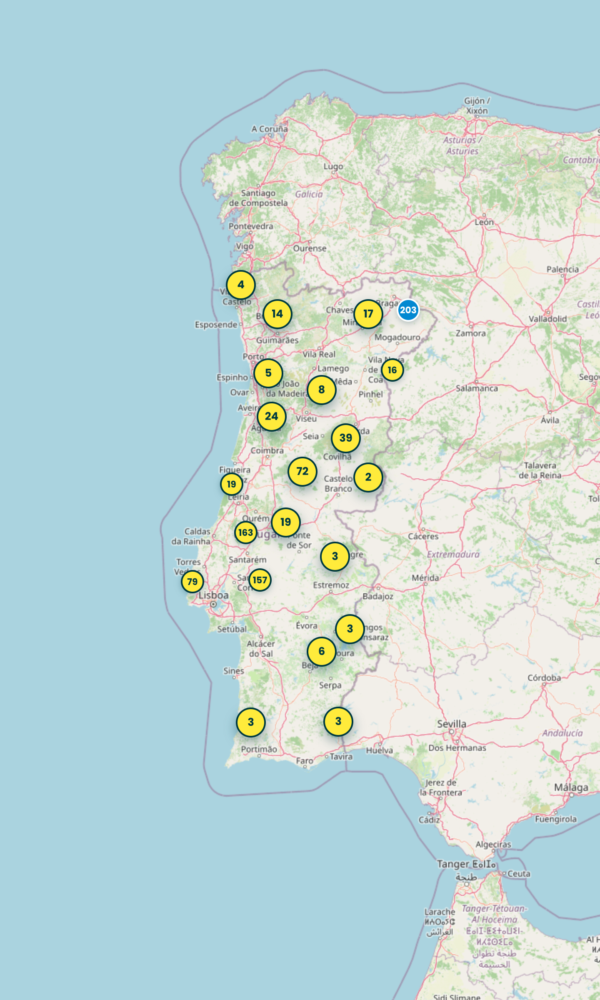
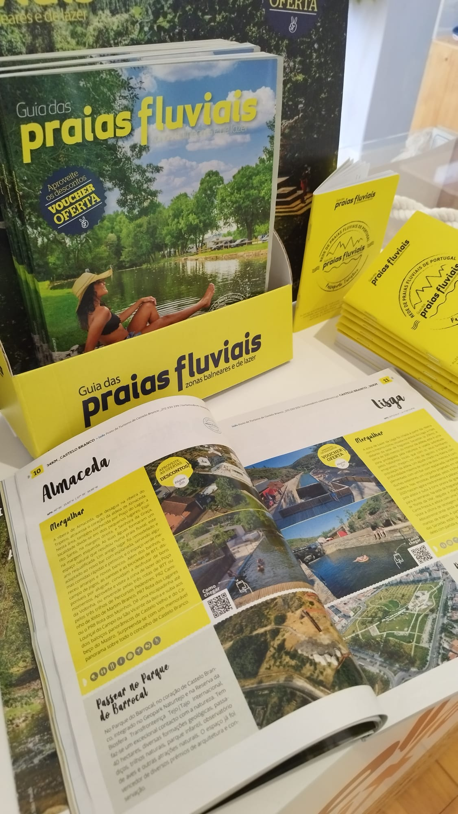
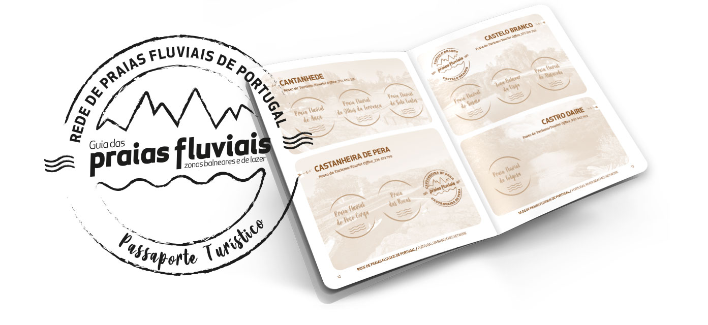

Descubra todas as praias fluviais e zonas balneares de Portugal Continental
Explorar Mapa

guias distribuídos
Há 25 anos a levar a beleza de Portugal às mãos de quem viaja. Distribuímos o guia gratuitamente em postos de turismo, alojamentos e todo o tipo de estabelecimentos parceiros ao redor do país.
Ver Pontos de DistribuiçãoPraias da Semana
Fale sobre a sua experiência
Em cada página de uma praia fluvial pode escrever comentários e tanto responder como ler aos de outros visitantes. A comunidade ajuda quem chega a seguir.
Explorar AvaliaçõesPraia limpa e com bom acesso. As crianças adoraram a zona rasa.
Água cristalina e pouca gente. Voltamos para o ano sem dúvida.
Ambiente tranquilo, ideal para fugir ao calor da cidade. Recomendo o caminho pela ribeira.
Excelente sítio para passar o dia em família. Voltámos no fim-de-semana seguinte.
* Comentários apresentados meramente ilustrativos.

Colecione carimbos das praias que visitar
- 1 Registe-se, visite uma praia e abra o seu passaporte digital.
- 2 Carimbe digitalizando o código QR no local.
- 3 Habilite-se a ganhar prémios e medalhas.
Vote na Praia Fluvial do Ano
Vencedor anunciado a 15 Novembro. Vote até 31 Outubro 2026.
Votar Agora